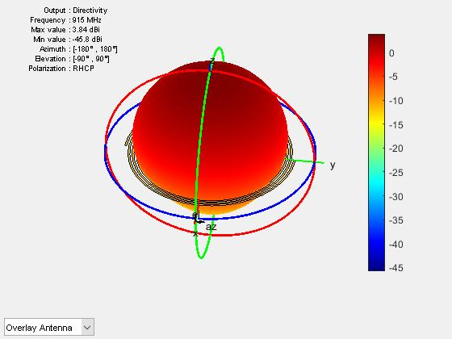
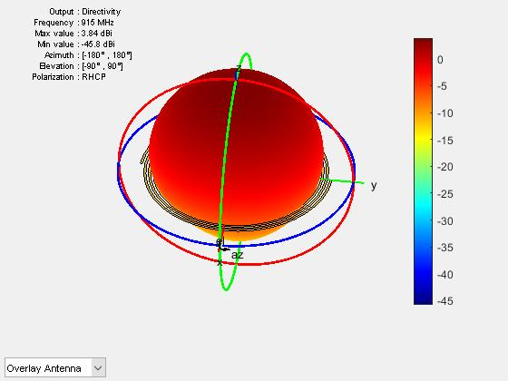

Buried Ice Detection with CPR
The goal of this work was to develop a system that would allow future lunar landers to identify
buried ice deposits with landing radar. I designed, simulated, and built cpol antennas for the
915 MHz ISM band and then used 400lbs of Concrete and a lot of ice to test the ability of
the system to identify buried ice. Unfortunately, the sub wavelength roughness of the aggregate
in the concrete caused really high CPR and all kinds of false positives (I can detect ice when it's
not buried). At least I learned a lot about concrete.
 

 SWR Measurements for the antennas, showing a good match at 915MHz despite being electrically small
SWR Measurements for the antennas, showing a good match at 915MHz despite being electrically small

 I also built a system for automating the CPR measurements using an RF switch controlled by the
FPGA GPIO pins on the LimeSDR. The baluns and the RF switch PCB are mine. Here are the (very inconclusive)
results:
I also built a system for automating the CPR measurements using an RF switch controlled by the
FPGA GPIO pins on the LimeSDR. The baluns and the RF switch PCB are mine. Here are the (very inconclusive)
results:
 Either the system was nonfunctional (although I did test every component and they performed as expected in
isolation) or the setup was flawed. Concrete is a poor lunar simulant and I was using a very small box with
unrealistically small targets in a very noisy environment.
Either the system was nonfunctional (although I did test every component and they performed as expected in
isolation) or the setup was flawed. Concrete is a poor lunar simulant and I was using a very small box with
unrealistically small targets in a very noisy environment.